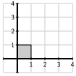
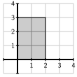
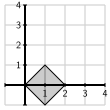
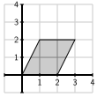
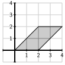
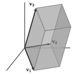

As invertibility plays a central role in this chapter, we need a criterion that tells us when a matrix is invertible. We already know that a square matrix is invertible if and only if it is row equivalent to the identity matrix. In this section, we will develop a second, numerical criterion that tells us when a square matrix is invertible.
To begin, let’s consider a \(2\times2\) matrix \(A\) whose columns are vectors \(\vvec_1\) and \(\vvec_2\text{.}\) We have frequently drawn the vectors and studied the linear combinations they form using a figure such as Figure 3.4.1.
Figure3.4.1.Linear combinations of two vectors \(\vvec_1\) and \(\vvec_2\) form a collection of congruent parallelograms.
Notice how the linear combinations form a set of congruent parallelograms in the plane. In this section, we will use the area of these parallelograms to define a numerical quantity called the determinant that tells us whether the matrix \(A\) is invertible.
To recall, the area of parallelogram is found by multiplying the length of one side by the perpendicular distance to its parallel side. Using the notation in the figure, the area of the parallelogram is \(bh\text{.}\)
Preview Activity3.4.1.
We will explore the area formula in this preview activity.
Find the area of the following parallelograms.
1.

2.

3.

4.

5.

Explain why the area of the parallelogram formed by the vectors \(\vvec\) and \(\wvec_1\) is the same as that formed by \(\vvec\) and \(\wvec_2\text{.}\)
Subsection3.4.1Determinants of \(2\times2\) matrices
We will begin by defining the determinant of a \(2\times2\) matrix \(A =
\left[\begin{array}{rr} \vvec_1 \amp \vvec_2
\end{array}\right]\text{.}\) First, however, we need to define the orientation of an ordered pair of vectors. As shown in Figure 3.4.2, an ordered pair of vectors \(\vvec_1\) and \(\vvec_2\) is called positively oriented if the angle, measured in the counterclockwise direction, from \(\vvec_1\) to \(\vvec_2\) is less than \(180^\circ\text{;}\) we say the pair is negatively oriented if it is more than \(180^\circ\text{.}\)
Figure3.4.2.The vectors on the left are positively oriented while the ones on the right are negatively oriented.
Definition3.4.3.
Suppose a \(2\times2\) matrix \(A\) has columns \(\vvec_1\) and \(\vvec_2\text{.}\) If the pair of vectors is positively oriented, then the determinant of \(A\text{,}\) denoted \(\det(A)\text{,}\) is the area of the parallelogram formed by \(\vvec_1\) and \(\vvec_2\text{.}\) If the pair is negatively oriented, then \(\det(A)\) is minus the area of the parallelogram.
As seen on the left of Figure 3.4.5, the vectors \(\vvec_1 = \evec_1\) and \(\vvec_2=\evec_2\) form a positively oriented pair. Since the parallelogram they form is a \(1\times1\) square, we have \(\det(I) = 1.\)
Figure3.4.5.The determinant \(\det(I) = 1\text{,}\) as seen on the left. On the right, we see that \(\det(A) = -2\) where \(A\) is the matrix whose columns are shown.
As seen on the right of Figure 3.4.5, the vectors \(\vvec_1\) and \(\vvec_2\) form a negatively oriented pair. The parallelogram they define is a \(2\times1\) rectangle so we have \(\det(A) = -2\text{.}\)
Activity3.4.2.
In this activity, we will find the determinant of some simple \(2\times2\) matrices and discover some important properties of determinants.
The sliders in the diagram below allow you to choose a matrix \(A=\begin{bmatrix}a \amp b \\
c \amp d \\
\end{bmatrix}\text{.}\) The two vectors representing the columns of the matrix, along with the parallelograms they define, are shown below.
Figure3.4.6.The geometric meaning of the determinant of a matrix.
Use the diagram to find the determinant of the matrix \(\left[\begin{array}{rr} -\frac12 \amp 0 \\ 0 \amp 2
\end{array}\right]\text{.}\) Along with Example 3.4.4, what does this lead you to believe is generally true about the determinant of a diagonal matrix?
Use the diagram to find the determinant of the matrix \(\left[\begin{array}{rr} 0 \amp 1 \\
1 \amp 0 \\
\end{array}\right]\text{.}\) What is the geometric effect of the matrix transformation defined by this matrix?
Use the diagram to find the determinant of the matrix \(\left[\begin{array}{rr} 2 \amp 1 \\
0 \amp 1 \\
\end{array}\right]\text{.}\) More generally, what do you notice about the determinant of any matrix of the form \(\left[\begin{array}{rr} 2 \amp k \\
0 \amp 1 \\
\end{array}\right]\text{?}\) What does this say about the determinant of an upper triangular matrix?
Use the diagram to find the determinant of any matrix of the form \(\left[\begin{array}{rr} 2 \amp 0 \\
k \amp 1 \\
\end{array}\right]\text{.}\) What does this say about the determinant of a lower triangular matrix?
Use the diagram to find the determinant of the matrix \(\left[\begin{array}{rr} 1 \amp -1 \\
-2 \amp 2 \\
\end{array}\right]\text{.}\) In general, what is the determinant of a matrix whose columns are linearly dependent?
Use the diagram to find the determinants of \(A\text{,}\)\(B\text{,}\) and \(AB\text{.}\) What does this suggest is generally true about the relationship of \(\det(AB)\) to \(\det(A)\) and \(\det(B)\text{?}\)
Later in this section, we will learn an algebraic technique for computing determinants. In the meantime, we will simply note that we can define determinants for \(n\times
n\) matrices by measuring the volume of a box defined by the columns of the matrix, even if this box resides in \(\real^n\) for some very large \(n\text{.}\)
For example, the columns of a \(3\times3\) matrix \(A\) will form a parallelpiped, like the one shown here, and there is a means by which we can classify sets of such vectors as either positively or negatively oriented. Therefore, we can define the determinant \(\det(A)\) in terms of the volume of the parallelpiped, but we will not worry about the details here.

Though the previous activity deals with determinants of \(2\times2\) matrices, it illustrates some important properties of determinants that are true more generally.
If \(A\) is a triangular matrix, then \(\det(A)\) equals the product of the entries on the diagonal. For example,
because the columns form a negatively oriented pair. You may remember from Subsection 3.1.3 that a matrix such as this is obtained by interchanging two rows of the identity matrix.
The determinant satisfies a multiplicative property, which says that
Rather than simply thinking of the determinant as the area of a parallelogram, we may also think of it as a factor by which areas are scaled under the matrix transformation defined by the matrix. Applying the matrix transformation defined by \(B\) will scale area by \(\det(B)\text{.}\) If we then compose \(B\) with the matrix transformation defined by \(A\text{,}\) area will scale a second time by the factor \(\det(A)\text{.}\) The net effect is that the matrix transformation defined by \(AB\) scales area by \(\det(A)\det(B)\) so that \(\det(AB)=\det(A)\det(B)\text{.}\)
Proposition3.4.8.
The determinant satisfies these properties:
The determinant of a triangular matrix equals the product of its diagonal entries.
If \(P\) is obtained by interchanging two rows of the identity matrix, then \(\det(P) = -1\text{.}\)
\(\det(AB) = \det(A)\det(B)\text{.}\)
Subsection3.4.2Determinants and invertibility
Perhaps the most important property of determinants also appeared in the previous activity. We saw that when the columns of the matrix \(A\) are linearly dependent, the parallelogram formed by those vectors folds down onto a line. For instance, if \(A=\begin{bmatrix} 1 \amp 2 \\ -1 \amp -2 \\
\end{bmatrix}\text{,}\) then the resulting parallelogram, as shown in Figure 3.4.9, has zero area, which means that \(\det(A)=0\text{.}\)
Figure3.4.9.When the columns of \(A\) are linearly dependent, we find that \(\det(A) = 0\text{.}\)
The condition that the columns of \(A\) are linearly dependent is precisely the same as the condition that \(A\) is not invertible. This leads us to believe that \(A\) is not invertible if and only if its determinant is zero. The following proposition expresses this thought.
Proposition3.4.10.
The matrix \(A\) is invertible if and only if \(\det(A)
\neq 0\text{.}\)
To understand this proposition more fully, let’s remember that the matrix \(A\) is invertible if and only if it is row equivalent to the identity matrix \(I\text{.}\) We will therefore consider how the determinant changes when we perform row operations on a matrix. Along the way, we will discover an effective means to compute the determinant.
In Subsection 3.1.3, we saw how to describe the three row operations, scaling, interchange, and replacement, using matrix multiplication. If we perform a row operation on the matrix \(A\) to obtain the matrix \(A'\text{,}\) we would like to relate \(\det(A)\) and \(\det(A')\text{.}\) To do so, remember that
Scalings are performed by multiplying a matrix \(A\) by a diagonal matrix, such as
which has the effect of multiplying the second row of \(A\) by \(3\) to obtain \(A'\text{.}\) Since \(S\) is diagonal, we know that its determinant is the product of its diagonal entries so that \(\det(S) = 3\text{.}\) This means that \(A'=SA\) and therefore
which has the effect of interchanging the first and second rows of \(A\text{.}\) As we saw in Proposition 3.4.8, \(\det(P) = -1\text{.}\) Therefore, when \(PA=A'\text{,}\) we have
which multiplies the first row by \(-2\) and adds the result to the third row. Since this is a lower triangular matrix, we know that the determinant is the product of the diagonal entries, which says that \(\det(R) = 1\text{.}\) This means that when \(RA = A'\text{,}\) we have \(\det(A')=\det(R)\det(A) = \det(A)\text{.}\) In other words, a row replacement does not change the determinant.
Proposition3.4.11.The effect of row operations on the determinant.
If \(A'\) is obtained from \(A\) by scaling a row by \(k\text{,}\) then \(\det(A') = k\det(A)\text{.}\)
If \(A'\) is obtained from \(A\) by interchanging two rows, then \(\det(A') =
-\det(A)\text{.}\)
If \(A'\) is obtained from \(A\) by performing a replacement operation, then \(\det(A') = \det(A)\text{.}\)
Activity3.4.3.
We will investigate the connection between the determinant of a matrix and its invertibility using Gaussian elimination.
Remembering Proposition 3.1.9, which of the matrices \(U_1\) and \(U_2\) are invertible? What are the determinants \(\det(U_1)\) and \(\det(U_2)\text{?}\)
Explain why an upper triangular matrix is invertible if and only if its determinant is not zero.
to arrive at an upper triangular matrix \(U\text{.}\) What is the relationship between \(\det(A)\) and \(\det(U)\text{?}\)
Since \(U\) is upper triangular, we can compute its determinant, which allows us to find \(\det(A)\text{.}\) What is \(\det(A)\text{?}\) Is \(A\) invertible?
Perform a sequence of row operations to find an upper triangular matrix \(U\) that is row equivalent to \(A\text{.}\) Use this to determine \(\det(A)\) and whether \(A\) invertible?
Suppose we apply a sequence of row operations on a matrix \(A\) to obtain \(A'\text{.}\) Explain why \(\det(A)
\neq 0\) if and only if \(\det(A') \neq 0\text{.}\)
Explain why an \(n\times n\) matrix \(A\) is invertible if and only if \(\det(A) \neq 0\text{.}\)
As seen in this activity, row operations can be used to compute the determinant of a matrix. More specifically, applying the forward substitution phase of Gaussian elimination to the matrix \(A\) leads us to an upper triangular matrix \(U\) so that \(A\sim U\text{.}\)
We know that \(U\) is invertible when all of its diagonal entries are nonzero. We also know that \(\det(U)\neq 0\) under the same condition. This tells us \(U\) is invertible if and only if \(\det(U) \neq 0\text{.}\)
Now if \(\det(A)\neq 0\text{,}\) we also have \(\det(U)\neq 0\) since applying a sequence of row operations to \(A\) only multiplies the determinant by a nonzero number. It then follows that \(U\) is invertible so \(U\sim I\text{.}\) Therefore, we also know that \(A\sim I\) and so \(A\) must also be invertible.
This explains Proposition 3.4.10 and so we know that \(A\) is invertible if and only if \(\det(A)\neq 0\text{.}\)
Finally, notice that if \(A\) is invertible, we have \(A^{-1}A = I\text{,}\) which tells us that
If \(A\) is an invertible matrix, then \(\det(A^{-1}) = 1/\det(A)\text{.}\)
Subsection3.4.3Cofactor expansions
We now have a technique for computing the determinant of a matrix using row operations. There is another way to compute determinants, using what are called cofactor expansions, that will be important for us in the next chapter. We will describe this method here.
To begin, the determinant of a \(2\times2\) matrix is
\begin{equation*}
\det\left[\begin{array}{rr}
a \amp b \\
c \amp d \\
\end{array}\right]
=
ad-bc\text{.}
\end{equation*}
With a little bit of work, it can be shown that this number is the same as the signed area of the parallelogram we introduced earlier.
Using a cofactor expansion to find the determinant of a more general \(n\times n\) matrix is a little more work so we will demonstrate it with an example.
Example3.4.13.
We illustrate how to use a cofactor expansion to find the determinant of \(A\) where
To begin, we choose one row or column. It doesn’t matter which we choose because the result will be the same in any case. Here, we choose the second row
The determinant will be found by creating a sum of terms, one for each entry in the row we have chosen. For each entry in the row, we form its term by multiplying
\((-1)^{i+j}\) where \(i\) and \(j\) are the row and column numbers, respectively, of the entry,
the entry itself, and
the determinant of the entries left over when we have crossed out the row and column containing the entry.
Since we are computing the determinant of this matrix
In this section, we associated a numerical quantity, the determinant, to a square matrix and showed how it tells us whether the matrix is invertible.
The determinant of a matrix has a geometric interpretation. In particular, when \(n=2\text{,}\) the determinant is the signed area of the parallelogram formed by the two columns of the matrix.
The determinant satisfies many properties, including the facts that \(\det(AB) = \det(A) \det(B)\) and that the determinant of a triangular matrix is equal to the product of its diagonal entries.
These properties helped us compute the determinant of a matrix using row operations. This also led to the important observation that the determinant of a matrix is nonzero if and only if the matrix is invertible.
Finally, we learned how to compute the determinant of a matrix using cofactor expansions, which will be a valuable tool for us in the next chapter.
We have seen three ways to compute the determinant: by interpreting the determinant as a signed area or volume; by applying appropriate row operations; and by using a cofactor expansion. It’s worth spending a moment to think about the relative merits of these approaches.
The geometric definition of the determinant tells us that the determinant is measuring a natural geometric quantity, an insight that does not easily come through the other two approaches. The intuition we gain by thinking about the determinant geometrically makes it seem reasonable that the determinant should be zero for matrices that are not invertible: if the columns are linearly dependent, the vectors cannot create a positive volume.
Approaching the determinant through row operations provides an effective means of computing the determinant. In fact, this is what most computer programs do behind the scenes when they compute a determinant. This approach is also a useful theoretical tool for explaining why the determinant tells us whether a matrix is invertible.
The cofactor expansion method will be useful to us in the next chapter when we look at eigenvalues and eigenvectors. It is not, however, a practical way to compute a determinant. To see why, consider the fact that the determinant of a \(2\times2\) matrix, written as \(ad-bc\text{,}\) requires us to compute two terms, \(ad\) and \(bc\text{.}\) To compute the determinant of a \(3\times3\) matrix, we need to compute three \(2\times2\) determinants, which involves \(3\cdot 2 = 6\) terms. For a \(4\times4\) matrix, we need to compute four \(3\times3\) determinants, which produces \(4\cdot3\cdot2 = 24\) terms. Continuing in this way, we see that the cofactor expansion of a \(10\times10\) matrix would involve \(10\cdot9\cdot8\ldots3\cdot2 = 10! = 3628800\) terms.
By contrast, we have seen that the number of steps required to perform Gaussian elimination on an \(n\times n\) matrix is proportional to \(n^3\text{.}\) When \(n=10\text{,}\) we have \(n^3 =
1000\text{,}\) which points to the fact that finding the determinant using Gaussian elimination is considerably less work.
Find the determinants of \(A\) and \(B\) using row operations.
Now find the determinants of \(A\) and \(B\) using cofactor expansions to verify your results
2.
This exercise concerns rotations and reflections in \(\real^2\text{.}\)
Suppose that \(A\) is the matrix that performs a counterclockwise rotation in \(\real^2\text{.}\) Draw a typical picture of the vectors that form the columns of \(A\) and use the geometric definition of the determinant to determine \(\det(A)\text{.}\)
Suppose that \(B\) is the matrix that performs a reflection in a line passing through the origin. Draw a typical picture of the columns of \(B\) and use the geometric definition of the determinant to determine \(\det(B)\text{.}\)
As we saw in Section 2.6, the matrices have the form
Determine whether the following statements are true or false and explain your response.
If we have a square matrix \(A\) and multiply the first row by \(5\) and add it to the third row to obtain \(A'\text{,}\) then \(\det(A') = 5\det(A)\text{.}\)
If we interchange two rows of a matrix, then the determinant is unchanged.
If we scale a row of the matrix \(A\) by \(17\) to obtain \(A'\text{,}\) then \(\det(A') =
17\det(A)\text{.}\)
If \(A\) and \(A'\) are row equivalent and \(\det(A') = 0\text{,}\) then \(\det(A) = 0\) also.
If \(A\) is row equivalent to the identity matrix, then \(\det(A) = \det(I) = 1\text{.}\)
6.
Suppose that \(A\) and \(B\) are \(5\times5\) matrices such that \(\det(A) = -2\) and \(\det(B) = 5\text{.}\) Find the following determinants:
\(\det(2A)\text{.}\)
\(\det(A^3)\text{.}\)
\(\det(AB)\text{.}\)
\(\det(-A)\text{.}\)
\(\det(AB^{-1})\text{.}\)
7.
Suppose that \(A\) and \(B\) are \(n\times n\) matrices.
If \(A\) and \(B\) are both invertible, use determinants to explain why \(AB\) is invertible.
If \(AB\) is invertible, use determinants to explain why both \(A\) and \(B\) are invertible.
8.
Provide a justification for your responses to the following questions.
If every entry in one row of a matrix is zero, what can you say about the determinant?
If two rows of a square matrix are identical, what can you say about the determinant?
If two columns of a square matrix are identical, what can you say about the determinant?
If one column of a matrix is a linear combination of the others, what can you say about the determinant?
9.
Consider the matrix
\begin{equation*}
A = \left[\begin{array}{rrr}
0 \amp 1 \amp x \\
2 \amp 2 \amp y \\
-1 \amp 0 \amp z \\
\end{array}\right]\text{.}
\end{equation*}
Assuming that \(\det(A) = 0\text{,}\) rewrite the equation in terms of \(x\text{,}\)\(y\text{,}\) and \(z\text{.}\)
Explain why \(\vvec_1\) and \(\vvec_2\text{,}\) the first two columns of \(A\text{,}\) satisfy the equation you found in the previous part.
Explain why the solution space of this equation is the plane spanned by \(\vvec_1\) and \(\vvec_2\text{.}\)
10.
In this section, we studied the effect of row operations on the matrix \(A\text{.}\) In this exercise, we will study the effect of analogous column operations.
Suppose that \(A\) is the \(3\times3\) matrix \(A= \left[\begin{array}{rrr} \vvec_1 \amp \vvec_2 \amp \vvec_3
\end{array}\right]\text{.}\) Also consider elementary matrices
Explain why the matrix \(AR\) is obtained from \(A\) by replacing the first column \(\vvec_1\) by \(\vvec_1 - 3\vvec_3\text{.}\) We call this a column replacement operation. Explain why column replacement operations do not change the determinant.
Explain why the matrix \(AS\) is obtained from \(A\) by multiplying the second column by \(3\text{.}\) Explain the effect that scaling a column has on the determinant of a matrix.
Explain why the matrix \(AP\) is obtained from \(A\) by interchanging the first and third columns. What is the effect of this operation on the determinant?
Use column operations to compute the determinant of
Use row (and/or column) operations to find the determinants of these matrices.
Write the \(6\times6\) and \(7\times7\) matrices that follow in this pattern and state their determinants based on what you have seen.
13.
The following matrix is called a Vandermond matrix:
\begin{equation*}
V = \left[\begin{array}{rrr}
1 \amp a \amp a^2 \\
1 \amp b \amp b^2 \\
1 \amp c \amp c^2 \\
\end{array}\right]\text{.}
\end{equation*}
Use row operations to explain why \(\det(V) =
(b-a)(c-a)(c-b)\text{.}\)
Explain why \(V\) is invertible if and only if \(a\text{,}\)\(b\text{,}\) and \(c\) are all distinct real numbers.
There is a natural way to generalize this to a \(4\times4\) matrix with parameters \(a\text{,}\)\(b\text{,}\)\(c\text{,}\) and \(d\text{.}\) Write this matrix and state its determinant based on your previous work.
This matrix appeared in Exercise 1.4.4.9 when we were found a polynomial that passed through a given set of points.